SURFEX-Crocus user documentation for cen branch¶
This page describe the SURFEX-Crocus model as it is present in cen branch of the SURFEX repository.
1-Multiphysics¶
Basic information¶
Developer name : M Lafaysse and B Cluzet
Status of the development : [Finished]
Date of start of development : 08/2015
Date of end of development :
Commit and tag before development : 62a95d3e
Commit and tag after development :
Branches on which the developpment is present : [cen/cen_dev]
Evaluated against SURFEX test database ? : [Yes]
New test added to database ? : [Yes]
Description of the development¶
Implementation of various physical options for all the main processes.
Scientific details: https://www.the-cryosphere.net/11/1173/2017/
Changes in namelist¶
&NAM_ISBA_SNOWn
CSNOWRAD = 'B92', 'T17' option for absorption of solar radiation, default : B92
CSNOWMETAMO = 'B21','F06','T07','S-B','S-F' option for metamorphism, default : B21
CSNOWFALL = 'V12','S02','A76','P75','NZE' option for falling snow density, default : V12
CSNOWCOMP = 'B92', 'S14', 'T11' option for compaction, default : B92
CSNOWCOND = 'Y81', 'I02','C11' option for snow thermal conductivity, default : Y81
CSNOWHOLD = 'B92', 'SPK','O04','B02' option for liquid water holding capacity, default B92
&NAM_ISBAn
CSNOWRES = 'DEF', 'RIL', 'M98' option for turbulent fluxes over snow, default : DEF
XCVHEATF = 0.2 Modify Cv to compensate biases in ground temperature (0.2 = default)
Full Description¶
CSNOWRAD : radiative transfer scheme in the snowpack
‘B92’ 3 band scheme from Brun et al, 1992 with empirical parameterization of ageing in the visible band (default)
‘T17’ 2 flow spectral scheme TARTES (Libois et al, 2013) with explicit impact of SSA, impurities, and zenithal angle on spectral reflectances. Increase computing time by a factor of 10. Require a careful setting of impurities deposition.
CSNOWMETAMO : snow metamorphism
‘B92’ obsolete option which will be removed in a next version : empirical evolution of dendricity, sphericity and size from Brun et al 1992
‘B21’ Translation of B92 option in terms of Optical Diameter and Sphericity (default). NB: this is a correction of C13 option which is not supported now
‘F06’ Evolution law of the optical diameter from Flanner and Zender (2006), which fits the model outputs of a snow microstructure model representing the diffusive vapour fluxes among the grains.
‘S-B’ Experimental evolution law of Optical Diameter from Schleef et al, 2014 for the first 48 hours after snowfall, then B21 option
‘S-F’ Experimental evolution law of Optical Diameter from Schleef et al, 2014 for the first 48 hours after snowfall, then F06 option
‘T07’ Experimental evolution law of Optical Diameter from Taillandier et al, 2007
CSNOWFALL : parameterization of falling snow density
‘V12’ function of air temperature and wind speed following Vionnet et al 2012 from experiments of Pahaut at Col de Porte (default)
‘S02’ function of air temperature and wind speed following Schmucki et al 2014, law used in the swiss SNOWPACK model (at least since 2002) Take care, the option was called S14 in Lafaysse et al, 2017.
‘A76’ function of air temperature from Anderson, 1976 (law used in ISBA-ES)
‘NZE’ constant at 200 kg/m3 for maritime climates (New Zealand)
CSNOWCOMP : parameterization of snow compaction
‘B92’ visco-elastic model using a viscosity function of density and air temperature from Brun et al, 1992 (default)
‘T11’ visco-elastic model using a viscosity function of density and air temperature from Teufelsbauer (2011) fitting the data of separate experimental works
‘S14’ non-linear relationship between settlement, stress and SSA decrease due to metamorphism from Schleef et al. (2014) for the first 48 h after snowfall. Then, B92 option.
CSNOWCOND : parameterization of snow thermal conductivity from snow density
‘Y81’ Yen et al 1981 (Default) from experimental values
‘I02’ from ISBA-ES (Boone, 2002; Sun et al., 1999) The law depends not only on density but also on snow temperature and it has a higher conductivity than experimental values to indirectly compensate for the fact that latent heat fluxes due to vapour fluxes are not represented in the model. This is expected to increase vertical heat transfer as temperature increases.
CSNOWHOLD : parameterization of maximum liquid water holding capacity in the bucket parameterization
‘B92’ fixed maximal percentage of the pores’ volumes from Pahaut 1975
‘SPK’ parameterization of the swiss SNOWPACK model (Wever et al 2014) fitting the experiments of Coléou and Lesaffre (1998)
‘B02’ maximal liquid water mass fraction. This parameterization has an opposite behaviour : the higher the density, the higher the maximal volumetric liquid water content.
2-Explicit representation of Light-Absorbing Particles¶
Basic information¶
Developer name : F Tuzet
Status of the development : [Finished]
Date of start of development : 2015
Date of end of development :
Commit and tag before development :
Commit and tag after development :
Branches on which the developpment is present : [cen/cen_dev]
Evaluated against SURFEX test database ? : [Yes]
New test added to database ? : [Yes]
Description of the development¶
Explicit representation of Light-Absorbing Particles as well as TARTES radiative transfer scheme. It is noteworthy that the s2m command to launch is the same as a classic Crocus run, only the namelist (and eventually the atmospheric forcing file) must be modified. These changes are detailed hereafter for each block of the namelist.
Mandatory Changes in namelist¶
&NAM_PREP_ISBA_SNOW
NIMPUR=0/1/2 ; default=0
&NAM_IO_OFFLINE
LSPECSNOW = .TRUE. ; default=.FALSE. # Enable spectral computation inside SURFEX/Crocus
NIMPUROF=0/1/2 ; default=0 # Initialize number of LAP types. NIMPUROF=NIMPUR.
&NAM_DIAG_ISBAn
LPROBANDS= .TRUE. ; default=.FALSE. # Enable spectral resolution of Crocus diagnostics, ratio diagnostics
&NAM_ISBA_SNOWn
CSNOWRAD='T17' ; default=B92 # Set radiative transfer scheme to TARTES+LAP as in Tuzet et al. (2017)
LATMORAD=.FALSE. ; default=.FALSE. # Not stable. Setting it to .TRUE. will cause some errors
&NAM_WRITE_DIAG_SURFn
CSELECT: You have to add 'SNOWIMP1','SNOWIMP2','SPEC_ALB', 'DIFF_RATIO', 'SPEC_TOT' in this field.
NIMPUR is the number of Light-Absorbing Particles types you want to use in your simulation. You can set:
NIMPUR=1 if you want to run simulations with Black Carbon only
NIMPUR=2 if you want to run simulations with Black Carbon and Dust.
If you want to run a simulation with Dust only you can set NIMPUR=2 and prescribe no BC deposition.
CSELECT makes a selection of the diagnostics you want to compute in your output NetCDF file (PRO file):
SNOWIMP1 is the Black Carbon concentration in each snow layer (g/g_of_snow)
SNOWIMP2 is the Dust concentration in each snow layer (g/g_of_snow)
SPEC_ALB is the spectral albedo for the 186 Crocus spectral bands (from 300 to 4000nm included by step of 20nm; i.e [300,320…,3980,4000])
DIFF_RATIO is the spectral direct to diffuse ratio for the 186 Crocus spectral bands (from 300 to 4000nm included by step of 20nm; i.e [300,320…,3980,4000])
SPEC_TOT is the total incoming irradiance after spectral repartition i.e the spectral irradiance used by TARTES for radiative transfer computations
NB: LATMORAD is supposed to compute the direct/diffuse ratio directly from atmospheric informations (AOD, Ozone column, Water column..). Set to FALSE, not stable yet.
Optional Changes in namelist to activate Light-Absorbing Particles deposition¶
The following changes set the way you want to prescribe your deposition fluxes as input of SURFEX/Crocus. You can either feed the model with prescribed and constant deposition fluxes or introduce a wet and dry deposition field directly in the forcing file. If you want to prescribe constant deposition fluxes over time:
&NAM_SURF_SNOW_CSTS
XIMPUR_WET(1)=5.e-11 ; default=0.
XIMPUR_WET(2)=5.e-9 ; default=0.
XIMPUR_DRY(1)=1.e-11 ; default=0.
XIMPUR_DRY(2)=1.e-9 ; default=0.
These variable set the different depositions fluxes and are expressed in g m^(-2) s^(-1). BE CAREFULL THERE IS A BUG IN SOME VERSION OF FORTRAN WHEN SETTING A NAMELIST VARIABLE TO 1.E-10.
XIMPUR_WET corresponds to the initial amount of Light-Absorbing Particles present in the falling snow (wet deposition) for each impurity type, activated in case of rain or snow.
XIMPUR_DRY corresponds to the dry deposition coefficient always activated.
The type of Light-Absorbing Particles into parenthesis as done above. e.g XIMPUR_WET(1)=1.e-9 set the wet depostion coefficient of Black Carbon to 1.e-9 g m^(-2) s^(-1)
If you want to prescribe directly the deposition fluxes at each model time step from a forcing file:
&NAM_IO_OFFLINE
LFORCIMP = .TRUE. ; default=.FALSE.
LFORCATMOTARTES =.FALSE. ; default=.FALSE. # currently unavailable, setting it to .TRUE. will cause some errors
When you activate LFORCIMP by setting it to .TRUE., you have to add new variables in your forcing file.
You have two variables to add for each type of Light-Absorbing Particles: IMPWET (wet deposition coefficient) and IMPDRY (dry deposition coefficient). Both these deposition fluxes have to be in g m^(-2) s^(-1). * If you have one type of Light-Absorbing Particles you will need IMPWET1 and IMPDRY1. * If you have two type of Light-Absorbing Particles you will need IMPWET1 and IMPDRY1 (Black Carbon) and IMPWET2 and IMPDRY2 (Dust). These new variables must be defined with the same dimension as the snowfall rate for exemple. Note that if you activate LFORCIMP the deposition values contained in NAM_SURF_SNOW_CSTS are ignored.
NB: LFORCATMOTARTES, as LATMORAD, is not stable yet. It should activates prescription of aerosol optical depth and ozone column from forcing file. When you activate LFORCATMOTARTES by setting it to .TRUE., you have to add new variables in your forcing file : AODTOT (total aerosol optical depth) and OZONE (total ozone column). These new variables must be defined with the same dimension as the snowfall rate for exemple. If those variables are not defined in your forcing files you will get an error when running the simulation.
Optional Changes in namelist to initialize an user prescribed snowpack with LAP¶
&NAM_PREP_ISBA_SNOW
XIMPURSNOW(:,1)= 0,0,5e-9,0,0 # BC concentration (g/g_of_snow) in each layer (5 layers here)
XIMPURSNOW(:,2)= 0,0,5000e-9,0,0 # Dust concentration (g/g_of_snow) in each layer(5 layers here)
By default the concentration in all layers will be 0.
Optional Changes in namelist: scavenging of impurities through the snowpack with melt water¶
As fully explained in the original article (Tuzet et al. 2017), it is possible to activate the scavenging of impurities through the snowpack with mel water. The representation of water percolation in Crocus are, for now, quite simple and might be affected by large uncertainties so the scavenging of impurities is disabled by default. If you want to run a simulation including the scavenging of impurities, you have to adapt the following example:
&NAM_PREP_ISBA_SNOW
XSCAVEN_COEF(1)=0.2 # 20% of Black Carbon scavenged with percolating water
XSCAVEN_COEF(2)=0.05 # 5% of dust scavenged with percolating water
Note : A scavenging coefficient <1 means that the percolating water is less concentrated in impurities than the layer from which the water is leaving. This leads to an enrichement of impurities as water is percolating through the snowpack.
Information on default values, new diagnostics and top layer behaviour¶
Default values:
The refractive of ice is taken from Warren and Brandt. 2008.
The values of the shape parameters B and g used in Kokhanovsky and Zege(2004) theory are set to 1.6 and 0.845 respectively (according to Libois et al. 2013 and Dumont et al. 2017)
The Mass Absoprtion Efficiency (MAE) of black carbon is based on refractive index advised by Bond and Bergstrom 2006, with a value of 11.25 kg m-1 at 550nm as in Tuzet et al. 2019.
The Mass Absoprtion Efficiency (MAE) of mineral dust is based on refractive index found in Caponi et al. 2017 for Lybian dust of PM 2.5
New diagnostics:
The Light-Absorbing Particles concentration diagnostics (SNOWIMP) have classic dimensions (time,number of point,number of snow layers).
The spectral diagnostics (SPEC_ALB,DIFF_TOT and SPEC_TOT) have special dimensions (time,number of spectral bands,number of snow layers). For now the spectral bands run from 300 to 4000 (included) by step of 20, meaning 186 spectral bands. (300,320,340,……,3980,4000)
Top layer behaviour:
At the end of the snow season, when scavenging is disabled, the Light-Absorbing Particles present in melting layers accumulate in the uppermost layers. This is the enrichement of the surface in Light-Absorbing Particles content, described for instance in Sterle et al. (2013).
In Crocus, this uppermost layer have its own dynamics, and its thickness can strongly vary from one timestep to another. When the mass of Light-Absorbing Particles in the uppermost layer is important (>1 microgram of black carbon for instance), the thickness of the uppermost layer strongly influences the radiative transfer. The spectral albedo then shows a strong dependence to the thickness of the top layer, and hence to the timestep while the mass of impurity is the same.
This behavior is just a numerical artifact that is not desired in Crocus simulations. To minimize this effect, the mass of Light-Absorbing Particles in the uppermost layer is equally reparted in the 10 first millimeters of SWE at each timestep. This way, the impact of the surface mass of Light-Absorbing Particles on snow radiative transfer does not depend on the numerical thickness of the uppermost layer. It is noteworthy that the default values of Light-Absorbing Particles mass absorption efficiency have been modified since the original article.
References¶
Bond, T. C. and Bergstrom, R. W.: Light absorption by carbonaceous particles: An investigative review, Aerosol science and technology, 40, 27–67, 2006
Caponi, L., Formenti, P., Massabo, D., Biagio, C. D., Cazaunau, M., Pangui, E., Chevaillier, S., Landrot, G., Andreae, M. O., Kandler, K., et al.: Spectral-and size-resolved mass absorption efficiency of mineral dust aerosols in the shortwave spectrum: a simulation chamber study, Atmospheric Chemistry and Physics, 17, 7175–7191, 2017.
Dumont, M., Arnaud, L., Picard, G., Libois, Q., Lejeune, Y., Nabat, P., Voisin, D., and Morin, S.: In situ continuous visible and near-infrared spectroscopy of an alpine snowpack, The Cryosphere, 11, 1091–1110, https://doi.org/10.5194/tc-11-1091-2017, http://www.the-cryosphere. net/11/1091/2017/, 2017.
Kokhanovsky, A. and Zege, E.: Scattering optics of snow, Applied Optics, 43(7), 1589–1602, https://doi.org/doi:10.1364/AO.43.0001589, 2004.
Sterle, K.M., McConnell, J.R., Dozier, J., Edwards, R. and Flanner, M.G., 2013. Retention and radiative forcing of black carbon in eastern Sierra Nevada snow. The Cryosphere, 7(1), pp.365-374.
Libois, Q., Picard, G., France, J. L., Arnaud, L., Dumont, D., Carmagnola, C. M., and King, M. D.: Influence of grain shape on light penetration in snow, The Cryosphere, 7, 1803–1818, https://doi.org/10.5194/tc-7-1803-2013, 2013.
Tuzet, F., Dumont, M., Lafaysse, M., Picard, G., Arnaud, L., Voisin, D., Lejeune, Y., Charrois, L., Nabat, P., and Morin, S.: A multilayer physically based snowpack model simulating direct and indirect radiative impacts of light-absorbing impurities in snow, The Cryosphere, 11, 2633–2653, 2017
Tuzet, F. et al. (In discussion) :Influence of light absorbing particles on snow spectral irradiance profiles, TCD 2019
Warren S, Brandt R. : Optical constants of ice from the ultraviolet to the microwave: A revised compilation. Journal of Geophysical Research: Atmospheres. 2008
3-Radiation on slopes¶
Basic information¶
Developer name : M Lafaysse
Status of the development : [Finished]
Date of start of development : 08/2017
Date of end of development :
Commit and tag before development : 002687be
Commit and tag after development :
Branches on which the developpment is present : [cen/cen_dev ? VERIFIER]
Evaluated against SURFEX test database ? : [Yes]
New test added to database ? : [Yes]
Description of the development¶
Correct parameterization of incoming radiations for homogeneous explicit slopes
This parameterization considers there is an homogeneous and infinite slope. It replaces the parameterization LNOSOF = FALSE which is wrong in that case (I do not know if LNOSOF = FALSE parameterization is correct in some other SURFEX configurations).
The LSLOPE parameterization must be used when the shortwave direct radiation has already been projected on the slope. The incoming diffuse shortwave and longwave radiations are horizontal and isotropic. The modifications of these fluxes is only due to a sky view factor which is estimated for an infinite slope.
The longwave radiation of the complementary solid angle is computed assuming the surface of the opposite slopes have the same temperature.
The shortwave radiation reflected by the opposite slopes are neglected.
Do not modify the direct radiation which must be projected in the forcing file.
Changes in namelist¶
&NAM_SURF_ATM
LSLOPE = .TRUE.
WARNING¶
Forcing files must have the radiations projected on the slopes.
This is the case if the sloppy forcing is generated by snowtools_git.
This can not be the case with old forcing files.
4-Output diagnostics¶
Basic information¶
Developer name : M Lafaysse
Status of the development : [Finished]
Date of start of development : 10/2017
Date of end of development :
Commit and tag before development : 3fae7763
Commit and tag after development : 3169a5f2 (cen)
Branches on which the developpment is present : [cen/cen_dev ? VERIFIER]
Evaluated against SURFEX test database ? : [Yes]
New test added to database ? : [Yes]
Description of the development¶
Option to write all topographic metadata in output files: ZS, aspect, slope, massif_number
Note that snowtools forces this option to TRUE in the namelists.
Changes in namelist¶
&NAM_IO_OFFLINE
LWRITE_TOPO = .TRUE.
5-Crocus Resort¶
Basic information¶
Developer name : P Spandre and C Carmagnola
Status of the development : [Finished]
Date of start of development : 2013 (V1) - 2018 (V2)
Date of end of development :
Commit and tag before development :
Commit and tag after development : 87d0598cbee (cen_dev)
Branches on which the developpment is present : [cen/cen_dev]
Evaluated against SURFEX test database ? : [Yes]
New test added to database ? : [Yes]
Description of the development (first version)¶
The understanding and implementation of snow management in detailed snowpack models is a major step towards a more realistic assessment of the evolution of snow conditions in ski resorts concerning past, present and future climate conditions. In this context, a new module accounting for snow management processes (grooming, snowmaking), named Crocus-Resort, has been integrated into the snowpack model Crocus. As for grooming, the effect of the tiller is explicitly taken into account and its effects on snow properties (density, snow microstructure) are simulated in addition to the compaction induced by the weight of the grooming machine. As for snowmaking, the production of machine-made snow is carried out with respect to specific rules and current meteorological conditions. Crocus-Resort has been proven to provide realistic simulations of snow conditions on ski slopes
Changes in namelist¶
&NAM_ISBA_SNOWn
CSNOWMETAMO = 'B21', 'C13', 'T07', 'F06' other options bring some errors
LSNOWCOMPACT_BOOL = .TRUE. activate grooming
LSNOWTILLER = .TRUE. activate tiller effect (if LSNOWCOMPACT_BOOL is true)
LSNOWMAK_BOOL = .TRUE. activate snowmaking
LSNOWMAK_PROP = .TRUE. activate machine-made snow properties (if LSNOWMAK_BOOL is true)
LSELF_PROD = .TRUE. activate automatic control of snow production
&NAM_SURF_SNOW_CSTS
XRHO_SNOWMAK = 600 Machine-made snow density.(kg/m3)
XPTA_SEUIL = 267.15 Wet bulb temperature threshold for machine-made snow production.
XPROD_SCHEME = 300,450 Production target (water consumption kg/m2, one for each simulation point)
XSM_END = 4,30,4,30 Month and day to stop grooming (for LSNOWMAK_BOOL = F and for LSNOWMAK_BOOL = T, respectively).
XFREQ_GRO = 1 Grooming frequency (usually 1/day).
XPP_D1 = 342. Beginning of base-layer generation production period (default 1st of November [11*31+1=342])
XPP_D2 = 387. End of base-layer generation production period (default 15th of December [12*31+15=387])
XPP_D3 = 124. End of reinforcement production period (default 31st of March [3*31+31=124])
XPP_H1 = 0. Beginning of base-layer generation production period (seconds)
XPP_H2 = 86400. End of base-layer generation production period (seconds)
Default: production during this period is allowed all day (0s to 86400s)
XPP_H3 = 64800. Beginning of reinforcement production period (seconds)
XPP_H4 = 28800. End of reinforcement production period (econds)
Default: production during this period is allowed from 6pm (64800s) to 8am (28800s)
XPR_A = -3.94 Adjustable coefficients depending on snow-gun type (Hanzer et al., 2014)
XPR_B = -4.23 Adjustable coefficients depending on snow-gun type (Hanzer et al., 2014)
XWT = 4.2 Wind speed threshold for snowmaking (m/s)
XPT = 150. Water consumption threshold during base-layer generation production period (kg/m2)
XPTR = 0.60 Total (natural+machine-made) snow height threshold during reinforcement production period (m)
&NAM_WRITE_DIAG_SURFn
CSELECT='WBT','MMP_VEG' Wet bulb temperature (°C) and cumulative water consumption for snowmaking (kg/m2).
More informations on options¶
LSNOWCOMPACT_BOOL: Grooming apply only if SWE > 20 kg/m2 and between 20h and 21h (and also 6h-9h is there is some snowfall during the night
LSNOWTILLER: Tiller effect, which applies down to 35 kg/m2 below the surface
LSNOWMAK_BOOL: Snowmaking only applies if the wind speed is < 10 km/h, during all the day during the period 01/11-15/12 and between 18h-8h during the period 15/12-31/03. During the first period (base-layer generation), the production is allowed until reaching a water consumption of XPT (= 150 kg/m2 in namelist above). During the second period (snowpack reinforcement), the production is allowed if the total (natural+machine-made) snow height is < 60 cm. Finally, a loss of 30% in the snow production process is applied in every condition.
LSNOWMAK_PROP: Switch for the activation of machine-made snow properties (F = same as natural snow). The machine-made snow properties are set as follows: SSA = 23 m2/kg, Sphericity = 0.9.
LSELF_PROD: Control of snow production. If T, the production follows the automatic control defined above (threshold of XPT during base-layer generation period, threshold of XPTR during snowpack reinforcement period). If F, the production is forced to match the pre-set production scheme defined by XPROD_SCHEME in namelist
XPROD_SCHEME: If LSELF_PROD=F, XPROD_SCHEME is the target water consumption (kg/m2)
XPROD_SCHEME is an array whose values correspond to different points (the first value is attributed to the first point, and so on).
WBT: Wet bulb temperature is computed even if LSNOWMAK_BOOL=F and is a diagnostic variable that can be shown by selecting CSELECT=’WBT’ in the namelist
MMP_VEG: During base-layer generation period, the production is then allowed as long as MMP < XPT (if LSELF_PROD=T) or MMP < XPROD_SCHEME(1) (if LSELF_PROD=F).
The value of MMP is written in the PREP.nc file and therefore it can be carried over between different simulation runs.
The value of MMP can be displayed by selecting CSELECT=’MMP_VEG’ in the namelist.
Other informations¶
The snow production rate is wet bulb temperature-dependent. The linear dependency of the rate on the temperature has been implemented according to Hanzer et al., 2014. The 2 adjustable coefficients XPR_A and XPR_B, that can be adapted depending on the snow-gun type (lances or fences, for instance). Assuming a machine-made snow density of 400 kg/m3, the production rate is computed as XPR_A*WBT+XPR_B and expressed in m²/h.
The default value of 150 kg/m2 for XPT is due to an average water availability of = 1500 m3/ha.
In Crocus: * the decisions to produce machine-made snow are defined in the routine snow_making.F90 * the impact of snowmaking and grooming on snow properties is coded in the routine snowcro.F90 (sub-routines SNOWNLFALL_UPGRID, SNOWCROCOMPACTN and SNOWGROOMING)
References¶
Pierre Spandre, S. Morin, M. Lafaysse, Y. Lejeune, H. François, E. George-Marcelpoil: Integration of snow management processes into a detailed snowpack model, Cold Regions Science and Technology, https://doi.org/10.1016/j.coldregions.2016.01.002
Florian Hanzer, Thomas Marke, Ulrich Strasser: Distributed, explicit modeling of technical snow production for a ski area in the Schladming region (Austrian Alps), Cold Regions Science and Technology, https://doi.org/10.1016/j.coldregions.2014.08.003
Carlo Carmagnola, S. Morin, M. Lafaysse, M. Vernay, H. François,N. Eckert, L. Batté, J. M. Soubeyroux, C. Viel: Combination of climatological information and meteorological forecast for seamless prediction of alpine snow conditions, https://api.semanticscholar.org/CorpusID:204910621
Florian Hanzer, Carlo Maria Carmagnola, Pirmin Philipp Ebner, Franziska Koch, Fabiano Monti, Mathias Bavay, Matthias Bernhardt, Matthieu Lafaysse, Michael Lehning, Ulrich Strasser, Hugues François, Samuel Morin: Simulation of snow management in Alpine ski resorts using three different snow models, Cold Regions Science and Technology, https://doi.org/10.1016/j.coldregions.2020.102995.
6-Snow drift and blowing snow module SYTRON¶
Basic information¶
Developer name : V Vionnet
Status of the development : [Finished]
Date of start of development :
Date of end of development :
Commit and tag before development :
Commit and tag after development :
Branches on which the developpment is present : [cen/cen_dev ? VERIFIER]
Evaluated against SURFEX test database ? : [Yes]
New test added to database ? : [Yes]
Description of the development¶
The snowdrift scheme increases compaction and metamorphism due to snowdrift (Brun et al, 1997 ; Vionnet et al, 2012) but it does not transfer mass between grid points.
To activate the scheme, the (now obsolete) LSNOWDRIFT logical key is replaced by CSNOWDRIFT option with 4 possible values: * CSNOWDRIFT=’NONE’ snowdrift scheme disactivated * CSNOWDRIFT=’DFLT’ (default) snowdrift scheme activated, properties of falling snow are purely dendritic * CSNOWDRIFT=’VI13’ snowdrift scheme activated, properties of falling snow are taken from Vionnet et al (2013) * CSNOWDRIFT=’GA01’ snowdrift scheme activated, properties of falling snow are taken from Gallée et al (2001)
The modification of initial microstructure in options VI13 and GA01 affects in particular the threshold wind speed for snow transport when blowing occurs with concurrent snowfall.
LSNOWSYTRON logical (default FALSE) key allows to activate the blowing snow module SYTRON (Vionnet et al, 2018) which simulates erosion and accumulation between opposite slope aspects in the topographic-based geometry used by MF operational simulations for avalanche hazard forecasting. This option must be maintained to FALSE in all other simulation geometries. It is recommended to combine LSNOWSYTRON=T with CSNOWDRIFT=VI13 (better skill scores in terms of blowing snow occurrence)
Changes in namelist¶
&NAM_ISBA_SNOWn
CSNOWDRIFT = 'NONE', 'DFLT', 'VI13', 'GA01'
LSNOWSYTRON = .TRUE., .FALSE.
References¶
Gallée, H., Guyomarc’h, G., & Brun, E. (2001). Impact of snow drift on the Antarctic ice sheet surface mass balance: possible sensitivity to snow-surface properties. Boundary-Layer Meteorology, 99(1), 1-19.
Vionnet, V., Guyomarc’h, G., Bouvet, F. N., Martin, E., Durand, Y., Bellot, H., … & Puglièse, P. (2013). Occurrence of blowing snow events at an alpine site over a 10-year period: observations and modelling. Advances in Water Resources, 55, 53-63.
Vionnet, V., Guyomarc’h G., Lafaysse, M., Naaim-Bouvet, F., Giraud, G. and Deliot, Y. : Operational implementation and evaluation of a blowing snow scheme for avalanche hazard forecasting, Cold Reg. Sci. Technol. 147, 1-10, Doi : 10.1016/j.coldregions.2017.12.006, 2018.
Brun, E., Martin, E., & Spiridonov, V. (1997). Coupling a multi-layered snow model with a GCM. Annals of Glaciology, 25, 66-72.
Vionnet, V., Brun, E., Morin, S., Boone, A., Faroux, S., Le Moigne, P., Martin, E., and Willemet, J.-M. : The detailed snowpack scheme Crocus and its implementation in SURFEX v7.2, Geosci. Model Dev., 5, 773-791, doi :10.5194/gmd-5-773-2012, 2012.
7-Spatialized blowing snow and sublimation module SNOWPAPPUS.F90¶
Basic information¶
This documentation is heavily inspired by the Snowpappus user guide written by Matthieu Baron. (see file: https://doi.org/10.5281/zenodo.7681340)
The mathematics-style notations used in this user guide are the same as in the SnowPappus description paper. (Baron M., Haddjeri A et al., 2024)
Recommendations of general namelist options¶
SnowPappus is not designed to work with some other options of SURFEX, in the other snow transport modules (SYTRON, Crocus-Meso-NH), and some options of Crocus. To avoid problems, here is a list of namelist parameters which should be fixed to these values :
&NAM ISBA SNOWn
CSNOWDRIFT= 'NONE'
LSNOWDRIFT_SUBLIM= .FALSE.
LSNOWSYTRON=.FALSE. ( default )
More justification about some of these requirements will be given in the fol- lowing sections. More generally, SnowPappus has currently be tested with the ”default” Crocus options. They are given in the provided namelists. The con- sistent behaviour of SnowPappus with other physical options (metamorphism, compaction, properties of falling snow) should be carefully evaluated before any large scale application.
Snowpappus specific namelist parameters¶
Snowpappus options ( to activate or disactivate SnowPappus and different sub- processes, choose the parameterizations … ). They are all gathered in the group &NAM ISBA SNOWn .
Activating or disactivating SnowPappus: LSNOWPAPPUS ( logical ) : Activates SnowPappus if set to .TRUE. . If .FALSE. (default) , the program does not run SnowPappus code.
Snowfall, blowing snow occurence and wind-induced snow metamorphism: Blowing snow occurrence detection depends mainly on :
The parameterization linking surface properties to threshold friction velocity
The properties of snowfall (in terms on microstructure and possibly density)
An important thing to know is that :
Wind-induced snow metamorphism can be computed by the SNOWCRO routine ( Crocus main routine )
Several options are available for fresh snow properties
Activating or disactivating wind-induced snow metamorphism interacts with the snowfall properties option.
First of all, we will explain how it works in Crocus without SnowPappus. Second, we will explain the modifications and additional SnowPappus option. In Crocus without SnowPappus :
'CSNOWFALL' controls falling snow density ( see SURFEX documentation for more details )
'CSNOWDRIFT' controls wind-induced snow metamorphism and falling
snow microstructure.'NONE': falling snow microstructure as described in
Vionnet et al. 2012 and Guyomar`ch et al. 1998, no wind-induced snow
metamorphism; 'VI13': falling snow microstructure as described in Vion-
net et al. 2013, wind-induced snow metamorphism as described in Vionnet
et al. 2012; 'DFLT'(default) : not described here; 'GA01' : not described
here; 'PAPP' : using pappus threshold wind speed to compute the mobility
index ( see Vionnet et al. 2012 for more details ).
'CSNOWMOB': gives the option for threshold wind speed. Threshold
wind speed is computed in the SNOWCRO routine.
For SnowPappus use, we have to set CSNOWDRIFT=’NONE’ so that all snow transport-related computations are done by SnowPappus. In order to keep control on falling snow properties, we enabled independent selection of wind-induced snow metamorphism option and snowfall properties
'CSNOWFPAPPUS' overcomes 'CSNOWDRIFT' to select falling snow microstructure.'GM98'
(Guyomar`ch & merindol 1998, Vionnet 2012) ; 'VI13' Vionnet 2013,
'NONE'(default) : no effect, CSNOWDRIFT prevails.
'CSNOWMOB' : Chooses the way threshold wind speed is computed in
SnowPappus when surface snow age is superior to the threshold value
XAGELIMPAPPUS ( and in snowcro if HSNOWDRIFT=.TRUE. ). 'GM98'
(default) historical version, Guyomar`ch et Mérindol (1998), see SnowPap-
pus description article ,'CONS' threshold wind speed is constant equalling
9 m/s ( at 5m height ), see SnowPappus description article, 'VI12' param-
eterization described in Vionnet et al 2012, 'LI07' parameterization as a
function of density as described in Liston et al. 2007, 'COGM' constant at
9 m/s if snow is non-dendritic, given by GM98 parameterization for den-
dritic snow ( beware: this option is also used for Crocus alone or Sytron.
Only 'GM98' and 'VI12' work in these cases )
other options
'OPAPPUDEBUG' : Boolean. If True triggers snowpappus debug mode.
This option displays additional information on the computation. It dis-
plays warnings, swe conservation verification results, time and date during
computation for easier debugging. And proof of SnowPappus mass con-
servation. (default .False.)
'CSALTPAPPUS' : 'P90' (default) : Saltation transport given by Pomeroy
1990 formulation, 'S04' : Sorensen 2004 - Vionnet 2012 formulation. More
details about it in Baron et al. 2023 Snowpappus description paper
'CLIMVFALL' : 'DEND' fall speed of suspended snow particles is com-
puted as old snow if snow is non-dendritic,'PREC' old snow = non-dendritic
OR age < XAGELIMPAPPUS2, 'MIXT' (default) old snow for non-dendritic,
new snow for dendritic and age < XAGELIMPAPPUS2 , weighted average
if dendritic more aged snow, the option is described in SnowPappus de-
scription paper
'CPAPPUSSUBLI' : 'NONE' : no sublimation in pappus transport scheme,
'SBSM': SBSM sublimation parametrisation, 'BJ10': Bintanja 1998 with
10m wind , 'BJ03' : Bintanja 1998 with 3m wind, 'GR06' : Gordon 2006
sublimation parameterization.
'OPAPPULIMTFLUX' : Boolean. If True = snow transport flux limitation
activated. It limits the flux on a pixel if there is not enough snow on it to
avoid removing more snow than there is on it. There is limitations on Q t
and q subl .
The condition is the following :

with PSWE being the snow mass for each pixel in kg/m 2 , P t step the com- putation time step in s, P mesh the pixel size in m and theta the slope angle. (default: False) It also limits the mass bilan of snowcro.F90 to XUEPSI. It also corrects the water mass flux balance to a precision of XUEPSI. The condition is the following:
WHERE (ZQDEP_TOT(:)<XUEPSI .AND. ZQDEP_TOT(:)>-XUEPSI)
ZQDEP_TOT(:) = 0.
ENDWHERE
The drawback of this condition is that it reduces the mass balance of snowpappus (error of xuepsi possible if there is more than 2 pixels con- tributing to the mass balance of one pixel) but improves the snowcro one by satisfying the snownlfall condition of snowfall xuepsi all the time.
'CSNOWPAPPUSERODEPO' : Determines how the deposition flux q dep is
computed from Q t 'ERO' : fictive ”pure erosion” case q dep = - Q l t with
l = 250m, 'DEP' : fictive ”pure deposition” case q dep = + Q l t , 'DIV'
(default): q dep computed with a mass balance ( needs 2D grids, described
in SnowPappus article ), 'NON' : q dep = 0 =¿ SnowPappus diagnostics
are computed but it does not adds or removes any snow. 'ERO', 'DEP'
and 'NON' options can be used in point-scale simulations.
Constant parameters can be specified in the namelist. They all are in the group &NAM SURF SNOW CSTS :
'XAGELIMPAPPUS' : maximum age of snow layer for which wind speed
threshold is set to fresh threshold wind speed !(default: 0.05 days)
'XAGELIMPAPPUS2' : maximum age of snow for using Naaim96 formu-
lation of terminall fall speed in snowpappus (default: 0.05 days)
'XWINDTHRFRESH' : 5 m wind speed threshold for transport of freshly
fallen ( or deposited ) snow (default: 6 m.s 1 )·
'XRHODEPPAPPUS', 'XDIAMDEPPAPPUS', 'XSPHDEPPAPPUS' :den-
sity (kg.m-3), optical diameter (m) and sphericity of wind blown deposited
snow (default: rho = 250 kg.m-3 , D opt=3.10-4 m, s = 1 )
'XLFETCHPAPPUS' : constant fetch distance l fetch applied to all points for
snowpappus blowing snow flux calculation (m)· (default : l f etch = 250m )
'XDEMAXVFALL' : when option MIXT is chosen for terminal fall speed
calculation, maximum dendricity d max to have pure young snow fall speed.
(default : d max = 0.3)
Snowpappus diagnostic variables¶
In general in SURFEX, the list of diagnostic variables names which are to be written in the output file has to be specified in the namelist option CSELECT, in group &NAM WRITE DIAG SURFn.
Here we give the exhaustive list of SnowPappus - related diagnostics.in SURFEX, time step at which diagnostic variables are given (namelist option XTSTEP OUTPUT in &NAM IO OFFLINE) is not the same as model time step. Thus, the output value is either ”instantaneous” ( i.e. the given value is the one at the model time step which equals the output time ) or ”cumulated” ( i.e. the given value is the averaged value on the whole output time step )
”cumulated” diagnostic variables:
'XQDEP_TOT' : total wind-blown snow net deposition rate q dep (kg.m -2 .s -1 )
'XQ_OUT_SUBL' : sublimation rate q subl (kg.m -2 .s -1 )
'XQT_TOT' : total wind-blown horizontal vertically integrated snow transport rate Q t (kg.m -1 .s -1 )
'XSNOWDEBTC' : cumulated amount of snow which should have been removed on the oint but was not because it became snowfree (kg.m -2 ) (see the paragraph ”mass balance” in the article )
”instantaneous” diagnostic variables:
'XBLOWSNWFLUX_1M' : horizontal blowing snow flux 1 m above snow
surface (kg.m -2 .s -1 )
'XBLOWSNWFLUXINT' : average horizontal blowing snow flux between
0.2 and 1.2 m Qt,int (kg.m -1 .s -1 )
'XQ_OUT_SALT' : total horizontal transport rate in the saltation layer
Qsalt (kg.m -1 .s -1 )
'XQ_OUT_SUSP' : total horizontal transport rate in the suspension layer
Qsusp (kg.m -1 .s -1 )
'XVFRIC_PAPPUS' : wind friction velocity computed by Snowpappus (m.s -1 )
'XVFRIC_T_PAPPUS' : threshold friction velocity (at ground level) for
snow transport (m.s -1 )
'XPZ0_PAPPUS' : roughness length for momentum z0 (m) used by Snowpappus
'XVFALL_PAPPUS' : mass averaged terminal fall velocity of snow particles
at the bottom of the suspension layer (m.s -1 )
References¶
Baron M., Haddjeri A et al. , SnowPappus v1.0, a blowing-snow model for large-scale applications of the Crocus snow scheme, 2024, https://doi.org/10.5194/gmd-17-1297-2024
8-MEB-Crocus coupling for snow-vegetation interactions¶
Basic information¶
Developer name : Axel Bouchet - Aaron Boone
Status of the development : [Finished]
Date of start of development : 02/2022
Date of end of development : 09/2022
Commit of development : 676f9308
Branches on which the developpment is present : [cen/cen_dev]
Evaluated against SURFEX test database ? : [Yes]
New test added to database ? : [Yes]
Description of the development¶
This configuration was developed in order to better describe snow-vegetation interactions in temperate midlatitude climates.
It was initially produced in order to improve snow amount simulations (height and SWE) at the Col de Porte experimental site. You can try this parameterization for any other site, even in cold climates like boreal forests (but we need more validations to be sure it makes no major degradation in this kind of vegetation).
Changes in namelist¶
&NAM_ISBA
LMEB = .TRUE.
&NAM_MEB_ISBA
LMEB_TALL_VEG = .TRUE.
LMEB_INT_PHASE_LUN = .TRUE.
LMEB_INT_UNLOAD_LUN = .TRUE.
LMEB_INT_UNLOAD_SFC = .TRUE.
Full Description¶
LMEB_TALL_VEG : enable this key to use vegetation height as a major variable to calculate maximum snow load on trees and turbulent fluxes. It will mainly increase evaporation and sublimation mass loss on tree branches.
LMEB_INT_PHASE_LUN : enable this key if you want to use the [Lundquist et al., 2021] intercepted snow melt formulation. When you set this key at True, the snow intercepted by the trees (= the snow which is ON the tree branches) melts faster (4kg.m^-2.K^-1.jour^-1) than using the classical config.
LMEB_INT_UNLOAD_LUN : enable this key if you want to use the snow unloading scheme of [Lundquist et al., 2021] (calibration of the [Roesh et al., 2001] scheme). This scheme is globally slowing the solid unloading, which favors snowmelt and sublimation of the intercepted snow as it stays a bit longer on the branches.
LMEB_INT_UNLOAD_SFC : enable this key in order to separate snow unloading from snowfalls in Crocus fresh snow incorporation. When the key is set at True, snow unloading will be included into the Crocus snowpack as “old” snow, with properties of melt forms and a density of 200kg.m^-2 .
9-SNAVA (development for SNow AVAlanche risk assessment)¶
Basic information¶
Developer name : D Monteiro
Status of the development : [Evaluation]
Date of start of development : 10/2024
Date of end of development :
Commit of development : fa387a1b0cd08058afb3fdbb9a1e000628162604
Branches on which the developpment is present : [cen_dev]
Evaluated against SURFEX test database ? : [Yes]
New test added to database ? : [Yes]
Description of the development¶
Miscellaneous options
XSNAVA_SLOPECSNAVA_DIAG
Computation of diagnostics for snow avalanche risk assessment purposes [SNAVA]
SNAVA_WET_SNOWWet-snow indicatorsSNAVA_SSIStructural Stability Index (Schweizer et al., 2006)SNAVA_ACCritical crack length (Heierli et al., 2008; Schweizer et al., 2011; Reuter et al., 2015)SNAVA_ACGCritical crack length (Gaume et al., 2017)
Algorithm for avalanche type problems identification [SNSAT]
Derived from Reuter et al. (2022).
SNAVA_SAT
Implementation details
Most of the developments presented here are gathered in the module
mode_snow_ava.F90 and divided into subroutines and functions called
within snowcro_diag.F90.
Scientific details¶
Publication in preparation.
Changes in namelist¶
&NAM_SURF_SNOW_CSTS
XSNAVA_SLOPE = 0-90 change slope angle used only for mechanics snow avalanche diagnostics computation, default : -1 (disable)
&NAM_ISBA_SNOWn
CSNAVA_DIAG = 'NONE ', 'MEPRA', 'SNAVA', 'SNSAT' enable/disable the computation of some diagnostics within SNOWCRO_DIAG.F90, default : 'MEPRA'
Miscellaneous options¶
XSNAVA_SLOPE : slope angle for mechanic diagnostic computations
‘0-99’ slope angle in degrees, values outside range is not considered (i.e. disable the option)
NOTE : The characteristics of the snowpack, including its thickness and all properties such as the surface energy balance leading to it usually affected by the slope are not accounted for. This option is only applied to the computation of mechanical properties. Further dev would be to indicate this value is True in pro files.
CSNAVA_DIAG : enable/disable the computation of some diagnostics within SNOWCRO_DIAG.F90 routine
‘NONE ‘ Disable the computation of most diagnostics usually computed in snowcro_diag. Only, MEPRA snow grain type remains calculated
‘MEPRA’ ‘NONE ‘+ Enable the computation of all diagnostics used to run MEPRA, including cumulated new snow (thickness and water equivalent). It is the default setting.
‘SNAVA’ ‘MEPRA’ + Enable the computation of SNAVA diagnostics (2024-2025 developpments), which are complementary wet-snow indicators, structural stability index and critical crack length. All are described in the following documentation.
‘SNSAT’ : ‘SNAVA’ + Enable the algorithm to determine avalanche type problems
Wet-snow indicators and SSI¶
Thickness of isothermal snow
(`mode_snow_ava.F90 / SNAVA_WET_SNOW / SNAVA_IH`)
The thickness of isothermal snow is defined as the integrated height of all snow layers with a temperature at or above the melting point (273.15 K).
Age since last isothermal state
(`mode_snow_ava.F90 / SNAVA_WET_SNOW / SNAVA_HUDAT`)
The age since last isothermal state of the snowpack is the time (in days) since the snowpack was isothermal at or above a fraction of its total height (set here to 0.9).
The default value is XUNDEF or NaN. This variable is present in the PREP as it requires previous time step state to be updated.
If the snowpack falls below the threshold fraction, the counter is reset to XUNDEF.
Volumic ratio of liquid water content
(`mode_snow_ava.F90 / SNAVA_WET_SNOW / SNAVA_LWCTV`)
Volumic ratio of the liquid water content of the snowpack (m³/m³).
The default value is XUNDEF or NaN. This variable is present in the PREP as it requires the previous time step for the SNSAT algorithm computation.
Structural stability index
(`mode_snow_ava.F90 / SNAVA_SSI / SNAVA_SSI`)
This diagnostic is computed as the skier stability index Sk38 (ACC_RAT) to which 1 or 2 is added in the case of a structurally homogeneous stratigraphy.
For each layer (except the top one), the absolute differences in hand hardness (
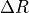
) and grain size (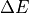
) are calculated in comparison with the upper adjacent layer.Then, the SSI is defined as:
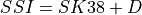
with
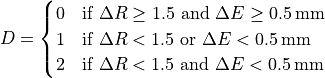
Critical crack length¶
The critical crack length is intended to represent the propagation of cracks in an avalanche. It gives a theoretical length (m) from which an initial crack in the weak layer will propagate further.** Multiple models of it exist; two of them are implemented and described below.
Anticrack model (SNAVA_AC)
(`mode_snow_ava.F90 / SNAVA_AC / SNAVA_AC`)
In this model, the characteristics of an equivalent slab are represented by a Timoshenko beam fixed on its left side, deforming only on its unsupported part. The mechanical behavior of the weak layer, including its deformation, is not taken into account. The weak layer fracture energy is the only property of the weak layer, to which the deformation energy of the slab is compared.
This approach allows expressing and relating the weak layer fracture energy
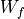
to the critical crack length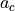
and to the characteristics of the slab–weak layer system: slab height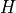
, slab Young modulus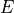
, and the normal ( ) and shear (
) and shear ( ) stresses due to the weight of the slab over the weak layer:
) stresses due to the weight of the slab over the weak layer:
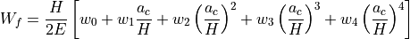
with
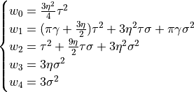
In this formulation,
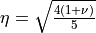
, where is the Poisson’s ratio, set to 0.2 according to Gaume et al., (2017) and Richter et al., (2019), and
is the Poisson’s ratio, set to 0.2 according to Gaume et al., (2017) and Richter et al., (2019), and 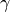
is the elastic mismatch parameter, set to 1.The weight of the slab is decomposed into a shear stress
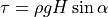
and a normal stress
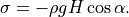
The slab height is defined as the sum of the thicknesses of all layers
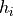
above the weak layer: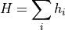
and the slab density is computed as the thickness-weighted arithmetic mean of the layer densities:
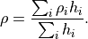
The Young modulus of each layer
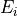
is determined using the density parameterization of Gerling et al., (2017):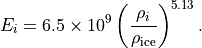
Equivalent Young modulus of the slab
The equivalent Young modulus of the slab is computed using solutions from the theory of laminate plates (cf. Eqs. 8c and 9b in Weisgraeber and Rosendahl, 2023). It is noted on page 1489 of this paper that the
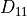
coefficient used here (mode I) characterizes the bending stiffness and allows representing the bridging effect of a snowpack configuration.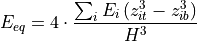
with
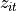
and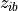
respectively the top and bottom height of the layer i. Considering only mode II, the equivalent Young modulus becomes: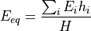
Both formulations assume that variations in the Poisson ratio between layers are negligible.
In the following,
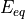
is computed using mode I only.Weak layer fracture energy parameterization : solution from Heierli
The weak layer fracture energy is a property of the weak layer, theoretically dependent on its material and geometric characteristics, for which no direct parameterization applicable to macroscopic snow models is available in the literature.
In this application, is linearly related to the min-cut (Hagenmuller et al., 2014), itself parameterized as a function of the weak layer density  , with a scaling factor depending on the specific surface area (SSA)
, with a scaling factor depending on the specific surface area (SSA)
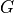
and the sphericity of the weak layer.
This allows discriminating between different grain-type behaviors (see Monteiro et al., in preparation, for further details).
of the weak layer.
This allows discriminating between different grain-type behaviors (see Monteiro et al., in preparation, for further details).
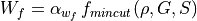
with
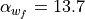
and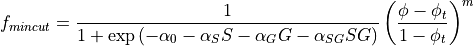
where the calibrated parameters are
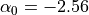
,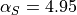
,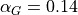
,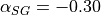
,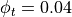
, and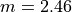
.Finally, determining the critical crack length reduces to finding the roots of the fourth-degree polynomial equation, which has real and strictly positive coefficients.
In practice, the roots are computed using a fourth-order polynomial solver R_QUARTIC implemented in the module mode_polyroots.F90.
Gaume et al., (2017) model (SNAVA_ACG) (`mode_snow_ava.F90 / SNAVA_ACG / SNAVA_ACG`)
The algorithm is implemented as described in Gaume et al., (2017). Please refer to this publication for full methodological details.
Avalanche problems determination algorithm (SNSAT)¶
(`mode_snow_ava.F90 / SNSAT / SNSAT`)
Weak layer identification
This step identifies potential weak layers according to grain types and slab characteristics. The algorithm iterates through each snow layer and tags layers fulfilling the following conditions:
Slab thickness > 0.18 m
Slab density > 100 kg m⁻³
A tagged layer is classified as a persistent weak layer (PWL) if the grain type is one of (FC, DH, FC+DH), and as a non-persistent weak layer (NPWL) if the grain type is one of (PP, DF, PP+DF, PPgp, DF+FC).
The table of tagged weak layers is not an output of the algorithm.
Non implemented: NPWLs are no longer considered after 48 hours without new snowfall or snow transport (i.e. AGE > 2 days and NEWSNOW48h == 0). PWLs become APWLs if
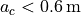
and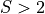
.Layer tracking
The algorithm attempts to match snow layers between times  and
and
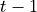
using their ages. The matching process starts from the top of the snowpack and iterates over the combined number of layers: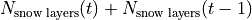
A parallel traversal of both layer tables is performed, as layer ages are sorted in ascending order. When a match is found, both tables advance.
Otherwise, the next layer in the table with the smallest age is selected.
The indices of matching layers at are stored in the variable SNSAT_IPRE with dimensions (Nb_layers, Nb_points, time).
Note: although layer merges are not explicitly handled, they can be inferred from jumps in the index matrix at time .
Failure initiation
This step assesses whether identified weak layers are prone to failure initiation.
For natural hazard:
Natural stability
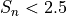
Expected time to failure
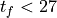
h
For triggered hazard (e.g. skier):
Skier stability index
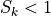
Boolean (0, 1) arrays with dimensions (Nb_layers, Nb_points, time) are stored in SNSAT_NINIT for natural hazard and SNSAT_AINIT for triggered hazard.
Crack propagation
This step evaluates whether an initiated failure is likely to propagate. For both natural and triggered hazard, propagation is assumed if:
Critical crack length
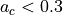
A boolean (0, 1) array (Nb_layers, Nb_points, time) indicating layers fulfilling propagation conditions is stored in SNSAT_PROP.
Avalanche problems (AP) determination
For each snow profile presenting a potential avalanche hazard, the avalanche problem types are determined as follows.
Wet-snow avalanche
This is the only avalanche problem that does not rely on initiation or propagation criteria. It requires that at least one persistent or non-persistent weak layer has been identified.
The onset of the wet-snow avalanche period is defined by:
Liquid water content (
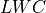
) ≥ critical liquid water content (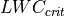
), set here to 1 %
After onset, a wet-snow avalanche risk is assumed if:
Days since isothermal state < 4 days
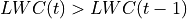
and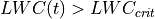
A table with values (XUNDEF, 1, 2) and dimensions (Nb_points, time) is stored in SNSAT_WET:
XUNDEF: no avalanche problem
1: onset conditions fulfilled
2: onset conditions fulfilled and increasing LWC
New snow
This avalanche type is related to fresh snow accumulation at the top of the snowpack.
It is considered if accumulated snowfall exceeds 5 cm per 24 h and if a non-persistent weak layer has been identified. Natural and/or triggered hazard is retained if the corresponding initiation and propagation indicators are critical.
Boolean (XUNDEF, 1) tables (Nb_points, time) are stored in SNSAT_NNEW for natural hazard and SNSAT_ANEW for triggered hazard.
Drifting snow
This avalanche type is associated with wind slab formation.
It is considered if the transported snow mass exceeds 0.2 kg cm⁻¹ per 24 h and if a non-persistent weak layer has been identified. Natural and/or triggered hazard is retained if the corresponding initiation and propagation indicators are critical.
Boolean (XUNDEF, 1) tables (Nb_points, time) are stored in SNSAT_NDRIFT for natural hazard and SNSAT_ADRIFT for triggered hazard.
Note: at each time step, several variables from SNOWPAPPUS are available in snow3Lisba. Without divergence activated (1D and 2D possible), the following quantities can be accessed: DEK%XQT_TOT(JJ), saltation transport DMK%XQ_OUT_SALT(JJ), and suspension DMK%XQ_OUT_SUSP(JJ) (kg m⁻¹ s⁻¹).
Here, only the saltation transport rate is used, converted to kg cm⁻¹ per 24 h. Since Snowcrodiag is called once per hour, transport fluxes are assumed stationary between output time steps.
Persistent weak layer
This avalanche type is associated with the presence of a buried persistent weak layer.
It is considered if new snow or drifting snow thresholds are exceeded and if a persistent weak layer has been identified. Natural and/or triggered hazard is retained if the corresponding initiation and propagation indicators are critical.
Boolean (XUNDEF, 1) tables (Nb_points, time) are stored in SNSAT_NPWL for natural hazard and SNSAT_APWL for triggered hazard.
References¶
Gaume, J., van Herwijnen, A., Chambon, G., Wever, N., & Schweizer, J. (2017). Snow fracture in relation to slab avalanche release: Critical state for the onset of crack propagation. The Cryosphere, 11(1), 217–228. https://doi.org/10.5194/tc-11-217-2017
Gerling, B., Löwe, H., & van Herwijnen, A. (2017). Measuring the elastic modulus of snow. Geophysical Research Letters, 44(21). https://doi.org/10.1002/2017GL075110
Hagenmuller, P., Calonne, N., Chambon, G., Flin, F., Geindreau, C., & Naaim, M. (2014). Characterization of the snow microstructural bonding system through the minimum cut density. Cold Regions Science and Technology, 108, 72–79.
Heierli, J., Gumbsch, P., & Zaiser, M. (2008). Anticrack nucleation as triggering mechanism for snow slab avalanches. Science, 321(5886), 240–243. https://doi.org/10.1126/science.1153948
Reuter, B., Schweizer, J., & van Herwijnen, A. (2015). A process-based approach to estimate point snow instability. The Cryosphere, 9(3), 837–847. https://doi.org/10.5194/tc-9-837-2015
Richter, B., Schweizer, J., Rotach, M. W., & van Herwijnen, A. (2019). Validating modeled critical crack length for crack propagation in the snow cover model SNOWPACK. The Cryosphere, 13(12), 3353–3366. https://doi.org/10.5194/tc-13-3353-2019
Schweizer, J., Bellaire, S., Fierz, C., Lehning, M., & Pielmeier, C. (2006). Evaluating and improving the stability predictions of the snow cover model SNOWPACK. Cold Regions Science and Technology, 46(1), 52–59. https://doi.org/10.1016/j.coldregions.2006.05.007
Schweizer, J., van Herwijnen, A., & Reuter, B. (2011). Measurements of weak layer fracture energy. Cold Regions Science and Technology, 69(2–3), 139–144. https://doi.org/10.1016/j.coldregions.2011.06.004
Weissgraeber, P., & Rosendahl, P. L. (2023). A closed-form model for layered snow slabs. The Cryosphere, 17(4), 1475–1496. https://doi.org/10.5194/tc-17-1475-2023